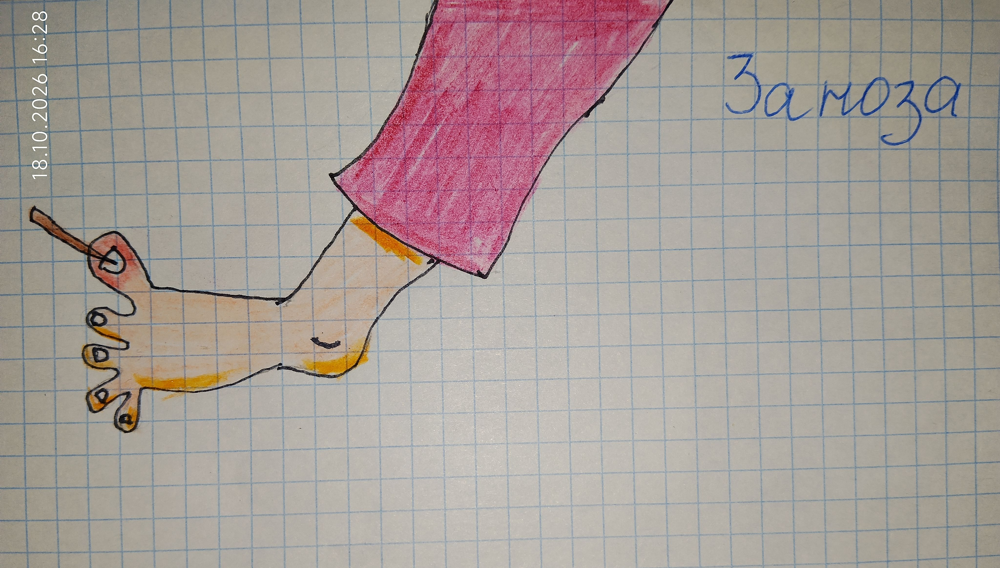

(Рисунок: Кучка сена или большая заноза)

А ещё был случай на сеновале в Сланцах. Я пыталась залезть наверх — хотела посмотреть, как там, наверху, среди сена. Нога поехала, и я вонзила занозу. Было больно и обидно: так хотелось забраться, а пришлось сидеть и вытаскивать занозу. Но я не плакала — я же была деревенская, привыкла терпеть.